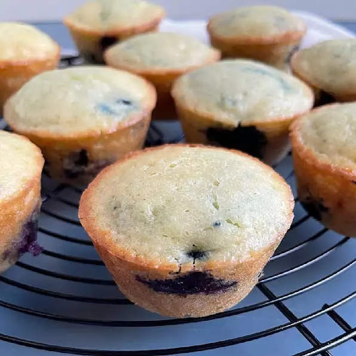

Garlic Bread

Description
If you're looking for a lemon blueberry muffin recipe that is moist and not overly sweet, this is the one for you. I swear by this recipe!
Ingredients
- 3.25 cups all-purpose flour
- 4 teaspoons baking powder
- 1 teaspoon baking soda
- 0.5 teaspoon salt
- 1.5 cups white sugar
- 1.5 cups milk
- 1 cup sour cream
- 0.5 cup melted butter
- 2 large eggs
- 1 tablespoon lemon zest
- 1.5 cups frozen blueberries
Steps
-
Preheat the oven to 350 degrees F (175 degrees C). Line 16 muffin cups with paper liners.
-
Sift flour, baking powder, baking soda, and salt together in a bowl.
-
Combine sugar, milk, sour cream, butter, eggs, and lemon zest in a large bowl. Beat with an electric mixer on low speed until blended. Fold in the flour mixture until batter is just moistened. Fold in blueberries; avoid over-mixing because batter will turn purple.
-
Fill muffin cups 3/4 full of batter.
-
Bake in the preheated oven until golden brown, 30 to 35 minutes. Let cool for 10 minutes.